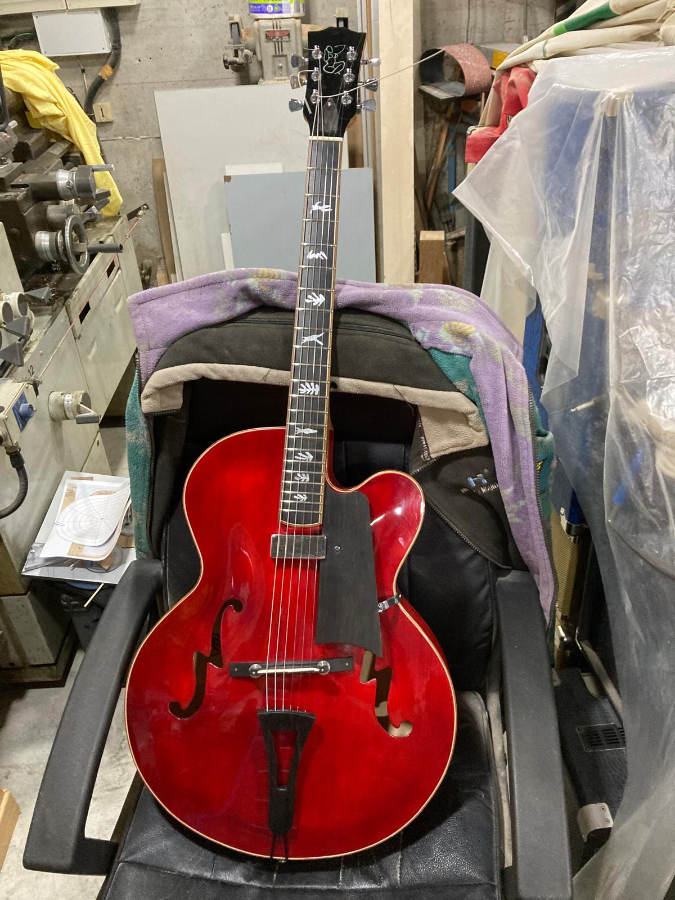
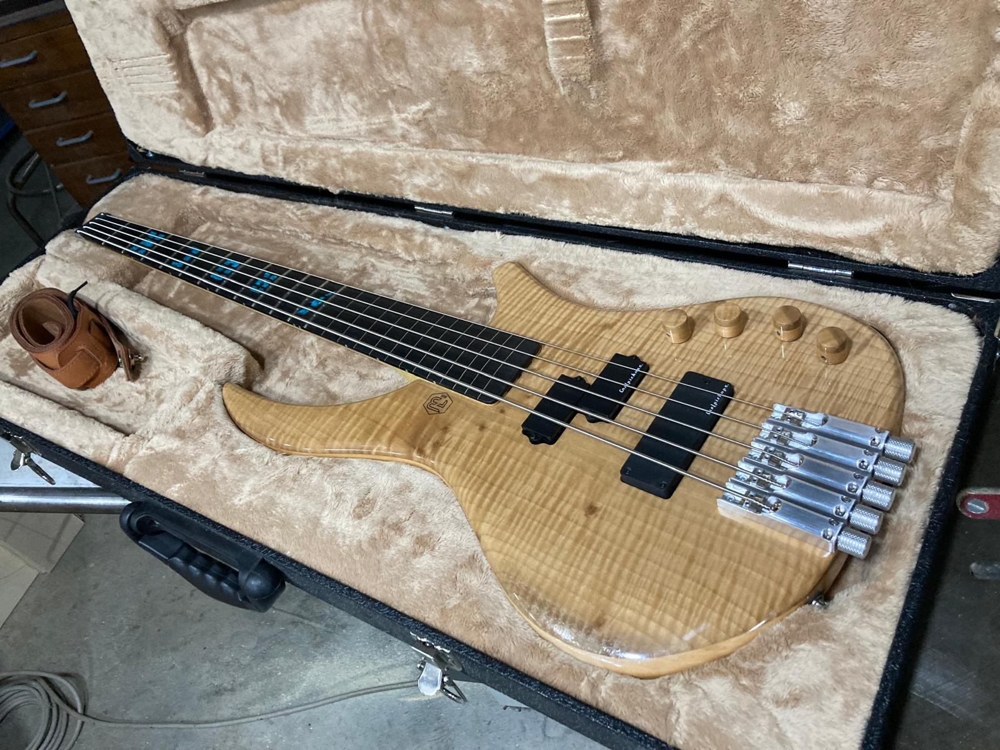
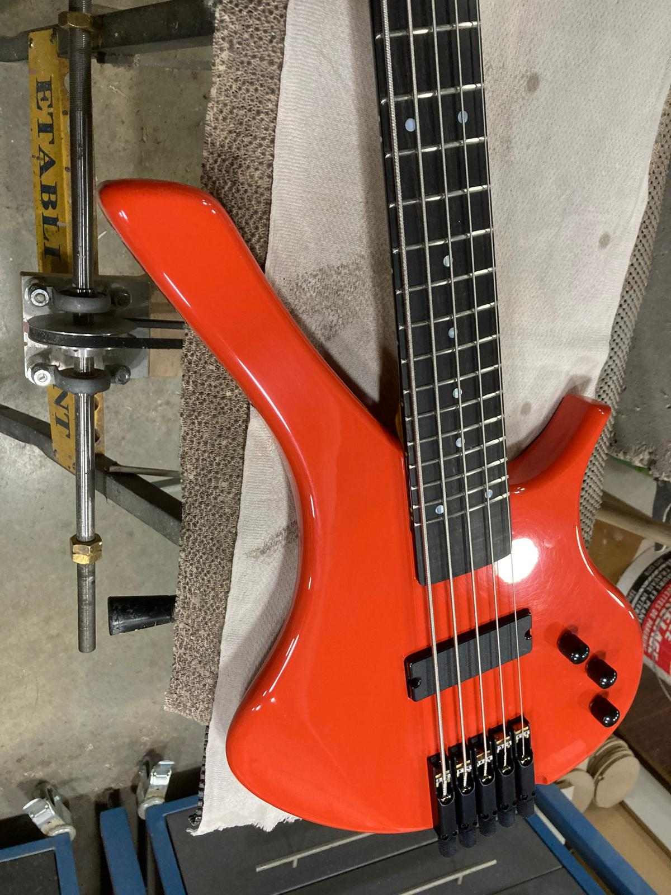

Custom Guitar
Workshop
Handcrafted instruments with character
Custom guitars by Fred
Twenty years of craft, shaped by music and hands-on making.
Hi, I'm Fred. I am a self-taught musician and guitar maker, and I feel lucky to spend my time bringing those two passions together through custom instruments.
Tailored upgrades, finishes, and setup changes to match your playing style. Each modification is chosen to improve feel, tone, and character.
See moreCareful repair work for instruments that need adjustment, restoration, or attention over time. The goal is always to preserve playability and bring the instrument back to life.
See moreCustom-built instruments made with close attention to materials, balance, and sound. Each build is shaped with the player in mind from the first idea to the final setup.
See more


"Every guitar should feel alive in the hands of the player."

Contact
Email : fredox-dummy-mail@gmail.com
Workshop Location : Between Lyon and Saint Etienne